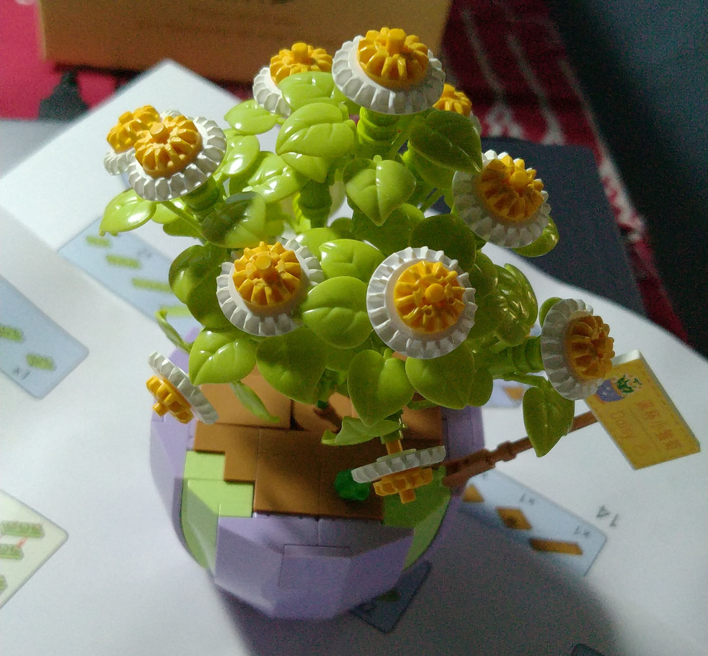
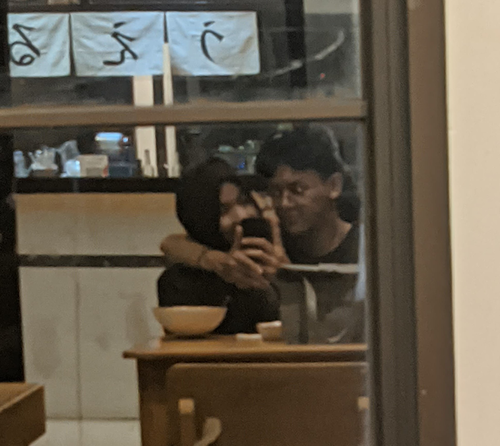

happy birthday!
Sayanggkuu Fatmaa
Sayanggkuu Fatmaa
Jangan lupa buat senyum terus yaa, semua orang suka senyum kamu termasuk akuu
kamu bebas buat jadi kamu apa adanya didepan aku okayy, aku bakal nerima kamu apa adanya
Nama bunga itu tu Daisy
tau ga??

-------
"Simbol Kelahiran Bulan April-Daisy, bunga yang menghiasi padang rumput dan ladang-ladang dengan kecantikan sederhananya, menjadi simbol yang indah bagi mereka yang lahir di bulan April. Terpancar dari kelembutan kelopak-kelopaknya yang putih bersih adalah kehangatan dan kesegaran yang melambangkan awal dari musim semi."
- - -
"Sebagaimana bulan April yang merupakan waktu di mana alam semesta mulai menghidupi kembali setelah musim dingin yang sepi, demikian pula seorang individu yang lahir di bulan ini dipenuhi dengan semangat kehidupan yang baru. Mereka seperti sinar matahari yang muncul setelah hujan, membawa keceriaan dan harapan kepada mereka yang berada di sekitarnya."
:3

---
Makasii sayangg
--
Makasi uda mau milih aku, aku seneng banget bisa ditemenin sama kamu walau aku orang nya mungkin aga prik :v. Makasii yaa sayangg, ada kamu buat aku lebih ngerti gimana cara ngehargain orang yang kita sayang
Kamu tetep jadi diri kamu yaa sayangg, jadi baik dan terus berusaha buat jadi lebih baik, aku bakal nemenin kamu okayy??
--wopyu ( ◜ ‿ ◝ )--
Bakal ku buat kamu yang pertama dan terakhir buat aku okayy
love u